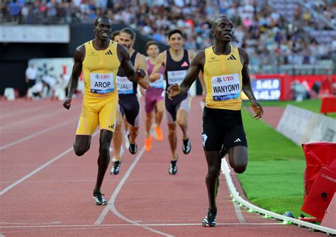

800 mètres - Paris Athletic 2026
Le 800 mètres, c'est le "sprint de l'impossible". C'est l'épreuve la plus cruelle de l'athlétisme, située exactement à la frontière entre la vitesse pure et l'endurance extrême.

Description de l'épreuve
Contrairement au 400m, les coureurs quittent leurs couloirs après seulement 100 mètres. C'est une partie d'échecs à 30 km/h : il faut jouer des coudes, éviter de se faire enfermer "à la corde" et choisir le moment millimétré pour lancer son attaque.
Imaginez courir deux tours de piste à une allure de sprinteur. Au bout de 500 mètres, le corps s'empoisonne littéralement d'acide lactique. Regarder un 800m, c'est voir des athlètes lutter contre la paralysie de leurs propres jambes dans les 100 derniers mètres.
C'est la discipline où les surprises sont les plus fréquentes. Le grand favori peut se faire piéger par un peloton trop lent ou une bousculade, laissant la place à un outsider audacieux.
Règles de la compétition
Contrairement au 100m ou au 400m, les athlètes partent en position debout (pas de starting-blocks). Les mains ne doivent pas toucher le sol.
La course commence avec un décalage (stagger). Chaque athlète doit rester dans son couloir attribué pendant le premier virage.
Après environ 100 mètres (à la sortie du premier virage), les coureurs franchissent une ligne marquée au sol (souvent signalée par de petits cônes ou prismes). C'est à ce moment précis qu'ils ont le droit de quitter leur couloir pour rejoindre la "corde" (le couloir 1).
Si un athlète pose le pied à l'intérieur de son couloir ou se rabat avant la ligne, il est disqualifié.
C'est une épreuve de contact. Si les légers coups de coude sont fréquents, toute action volontaire pour gêner, pousser ou couper la trajectoire d'un adversaire entraîne une disqualification pour obstruction.
Un coureur peut dépasser par la droite ou par la gauche, mais il doit s'assurer de ne pas "rabattre" trop tôt devant l'adversaire (ce qu'on appelle "couper la foulée").
Un athlète qui bouge ou part avant le coup de pistolet est immédiatement exclu de la course.
Calendrier de l'épreuve
| Phase | Date | Horaire | Catégorie |
|---|---|---|---|
| Premier Tour | Jeudi 09/07 | 14:45 | Femmes |
| Premier Tour | Jeudi 09/07 | 16:45 | Hommes |
| Tour de Repêchage | Vendredi 10/07 | 09:15 | Femmes |
| Tour de Repêchage | Vendredi 10/07 | 11:15 | Hommes |
| Demi-finales | Samedi 11/07 | 11:30 | Femmes |
| Demi-finales | Samedi 11/07 | 13:15 | Hommes |
| Finale | Dimanche 12/07 | 19:30 | Femmes |
| Finale | Dimanche 12/07 | 20:30 | Hommes |
Records
| Record | Athlète | Hauteur | Année |
|---|---|---|---|
| Record du monde (Hommes) | David Rudisha (KEN) | 1 minute et 40,91 secondes | 9 août 2012 |
| Record du monde (Femmes) | Jarmila Kratochvílová (TCH) | 1 minute et 53,28 secondes | 26 juillet 1983 |